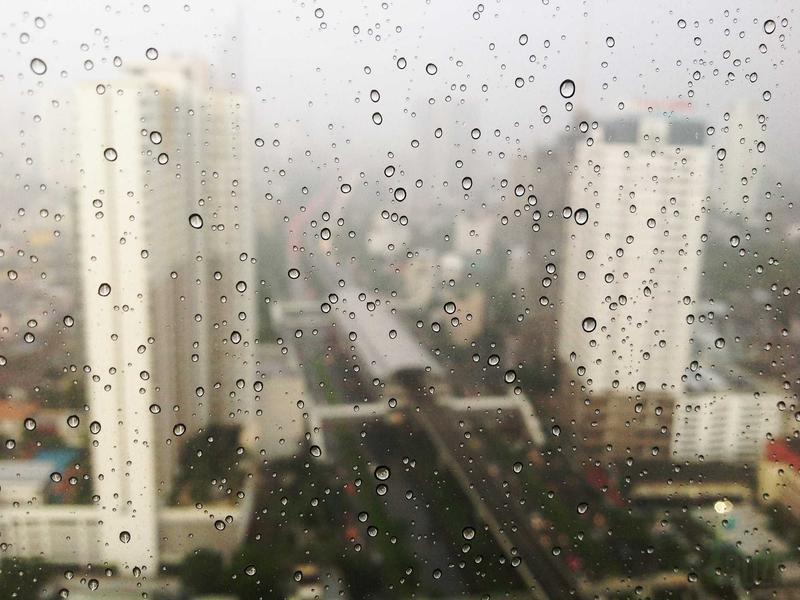

Hanauma Bay
A protected marine reserve curved into an old volcanic crater. The shallow, calm water makes it the most beginner-friendly snorkeling on Oahu — expect parrotfish, sea turtles, and a short conservation video before you can enter.